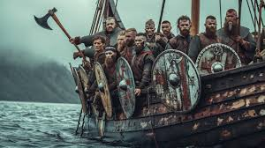
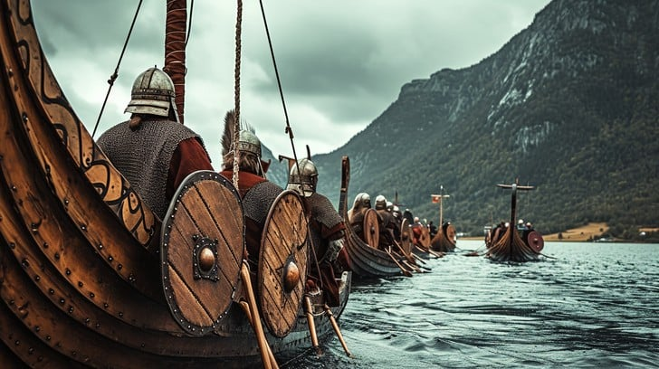

VIKINGS JOURNEY
Viking journeys were primarily driven by exploration, trade, and raiding. Using their expertly crafted longships, they sailed across the North Sea, the Atlantic, and along European rivers, reaching as far as North America, the Middle East, and Russia. Their voyages led to the discovery of new lands, such as Iceland, Greenland, and Vinland (in North America), and established trade routes with distant regions. These journeys helped Vikings expand their influence, settle new territories, and spread their culture, while also bringing back wealth from raids and trade.
Viking warriors used longships for their journeys into battle, which were designed for speed and agility on both open seas and shallow rivers. These sleek, fast vessels allowed them to navigate quickly, often launching surprise raids on coastal settlements. With their shallow draft, longships could land directly on beaches, facilitating swift assaults and retreats. Vikings were adept sailors, using the winds and currents to their advantage, making their naval prowess a key element of their military success and territorial expansion during the Viking Age.
